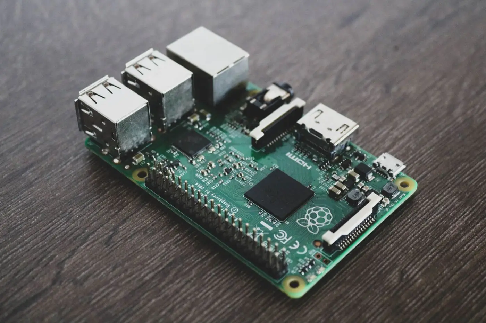
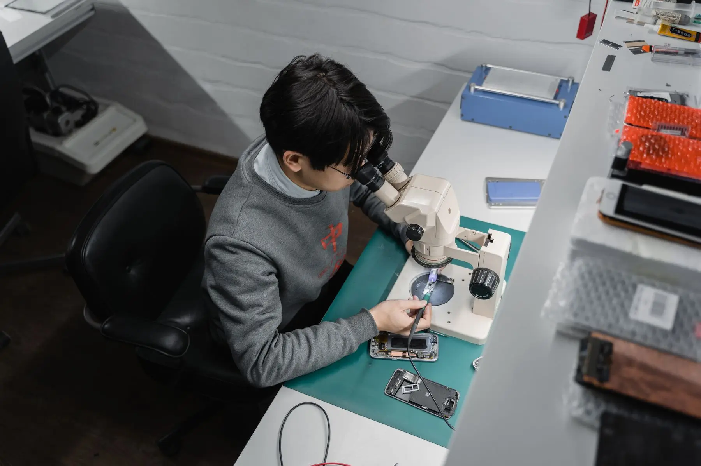
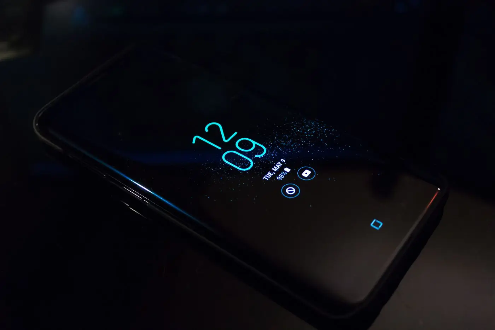
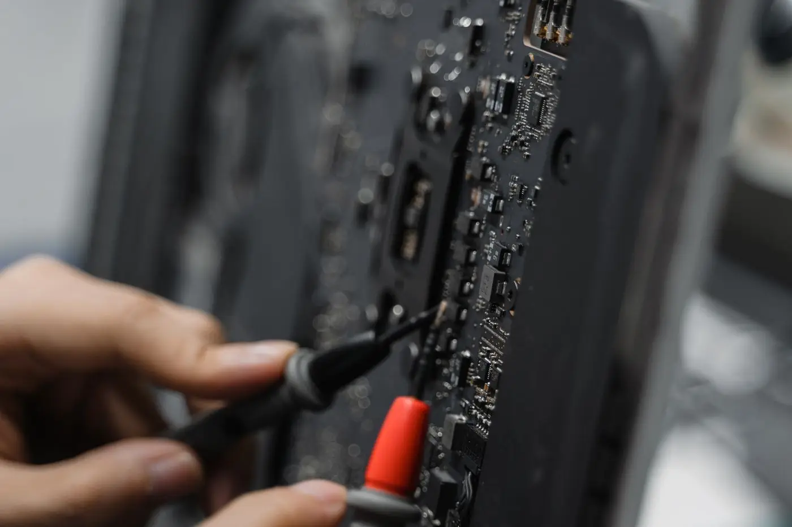

Ganti LCD & Touchscreen
Konsultasikan penggantian layar retak, bergaris, atau touchscreen yang tidak responsif sesuai kondisi perangkat Anda.
Your Phone, Our Priority.
Mulai dari layar pecah, baterai bermasalah, hingga HP mati total. Konsultasikan masalah smartphone Anda bersama DicoFix.

Penanganan perangkat dimulai dari konsultasi yang jelas melalui WhatsApp.
Cakupan merek
Daftar berikut adalah contoh merek yang umum ditanyakan pelanggan. Konfirmasikan merek dan model Anda melalui WhatsApp sebelum perbaikan. Ini bukan jaminan bahwa seluruh merek sudah dilayani.
Layanan
Pilih topik yang paling dekat dengan kendala perangkat Anda, lalu lanjutkan konsultasi melalui WhatsApp agar teknisi dapat menanyakan detail yang diperlukan.

Konsultasikan penggantian layar retak, bergaris, atau touchscreen yang tidak responsif sesuai kondisi perangkat Anda.
Diskusikan opsi penanganan baterai yang cepat drop, menggelembung, atau tidak mengisi dengan normal.

Laporkan kendala charge yang longgar, tidak terdeteksi, atau putus-putus untuk dibantu pemeriksaan lebih lanjut.
Konsultasikan kendala software seperti bootloop, aplikasi error, atau sistem yang tidak berjalan semestinya.

Ceritakan kondisi HP yang tidak menyala untuk mendapatkan arah pemeriksaan awal sebelum penanganan lanjutan.
Sampaikan masalah kamera buram, tidak fokus, atau speaker yang kecil/serak untuk dibantu peninjauan.
Pendekatan layanan
Fokus kami adalah memudahkan Anda memahami opsi perbaikan. Klaim hasil, durasi, atau garansi tertentu akan dikonfirmasi langsung saat konsultasi, bukan dijanjikan di halaman ini.
Anda bisa menjelaskan keluhan perangkat kapan saja melalui WhatsApp, tanpa perlu mengisi formulir rumit.
Estimasi dan opsi penanganan disampaikan secara langsung, sehingga Anda dapat mempertimbangkan langkah berikutnya.
Setiap smartphone memiliki kondisi berbeda. Teknisi menyesuaikan pemeriksaan dengan gejala dan model yang Anda sampaikan.
Pertanyaan, konfirmasi, dan update proses tetap terpusat di percakapan WhatsApp agar alurnya ringkas.
Estimasi
Pilih merek, model, dan jenis kerusakan. Formulir ini tidak menghitung harga otomatis. Data pilihan akan disusun menjadi pesan WhatsApp agar teknisi dapat menindaklanjuti.
Alur layanan
Mulai percakapan dan sampaikan bahwa Anda ingin memeriksa atau memperbaiki smartphone.
Cantumkan merek, model, gejala, dan kapan masalah mulai muncul agar pemeriksaan lebih terarah.
Teknisi akan menjelaskan kemungkinan penanganan dan informasi biaya sesuai data yang tersedia.
Anda yang memutuskan apakah perbaikan dilanjutkan setelah informasi tersebut disampaikan.
Testimoni
Kutipan di bawah ini adalah data dummy untuk keperluan tampilan website. Bukan ulasan pelanggan asli dan bukan rating agregat bisnis.
Andi Pratama
“LCD HP saya pecah, setelah diperbaiki hasilnya bagus. Pengerjaannya juga cepat dan komunikatif.”
Rizky Ramadhan
“Awalnya HP saya mati total. Setelah konsultasi, dijelaskan kemungkinan kerusakan dan estimasi biayanya.”
Siti Rahmawati
“Pelayanannya ramah, harga dijelaskan di awal, dan proses perbaikannya transparan.”
Fajar Maulana
“Baterai HP saya cepat habis. Setelah diganti, sekarang pemakaiannya jauh lebih nyaman.”
Dewi Anggraini
“Enak bisa konsultasi lewat WhatsApp dulu sebelum datang ke tempat service.”
Budi Santoso
“Port charger HP saya bermasalah. Sekarang sudah bisa digunakan kembali dengan normal.”
FAQ
Jawaban di bawah ini bersifat umum. Untuk detail yang belum dikonfirmasi pemilik bisnis, silakan tanyakan langsung melalui WhatsApp.
Konsultasikan masalah smartphone Anda bersama DicoFix dan temukan pilihan penanganan yang sesuai.
Kontak
Data yang belum diisi pemilik ditandai sebagai belum dikonfigurasi dan bukan informasi bisnis yang sudah terverifikasi.
Bisnis & pemilik
DicoFix · Dico Hermawan
Nomor WhatsApp belum dikonfigurasi
Alamat toko
Alamat toko belum dikonfigurasi
Jam operasional
Jam operasional belum dikonfigurasi
Peta Google Maps belum ditampilkan karena URL lokasi belum dikonfigurasi. Tambahkan tautan peta yang valid di src/config/business.ts setelah alamat toko dikonfirmasi.